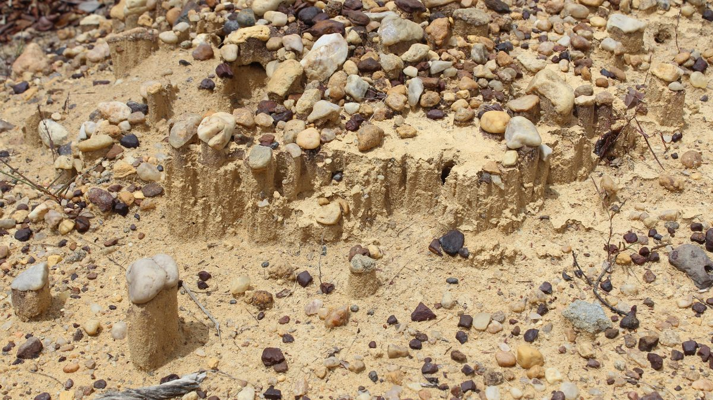

The date that doesn't add up
In Serra da Capivara, in southeastern Piauí, there are more than a thousand painted rock faces and a layer of charcoal that, if it really comes from human fire, pushes the arrival in the Americas tens of thousands of years back. The debate has lasted forty years. And the strongest argument against the thesis lives inside the park itself.
- Where
- São Raimundo Nonato, Piauí
- Coordinates
- 8°50′S 42°34′W
- Park area
- 1,291.4 km²
- Cataloged sites
- more than 1,200
- Claimed date
- up to 60,000 years BP
- World Heritage
- UNESCO, 1991
The caatinga of southeastern Piauí is a place of violent contrast. Nine months of drought, with cracked ground and vegetation reduced to grey thorn; then the rain, and in a few days everything turns green. In the middle of it there is a sandstone escarpment with hundreds of shelters hollowed out by erosion, and on the walls of those shelters there are people painted in red: hunting, dancing, giving birth, having sex, executing prisoners, chasing deer. There are more than a thousand sites with paintings. It is the largest concentration of rock art in the Americas.
Beneath the floor of one of these shelters — the Boqueirão da Pedra Furada — there is a sequence of layers with charcoal and with flaked stones. In 1986, the archaeologist Niède Guidon published in Nature that the charcoal in those layers formed a continuous sequence running from 6,160 to 32,160 years BP. Later publications and statements by the team went as far as 48 thousand, then 60 thousand.
If she is right, the history of the peopling of the Americas is wrong by an enormous margin. If she is wrong, it is the most persistent case of self-deception in Brazilian archaeology. Forty years later, the answer is still being argued — and the ground of the argument has moved.
01The place
Serra da Capivara National Park was created in 1979 and covers 1,291.4 km² across four municipalities of Piauí: São Raimundo Nonato, João Costa, Brejo do Piauí and Coronel José Dias. In 1991 it was inscribed on the UNESCO World Heritage List under cultural criterion (iii) — testimony to a cultural tradition — under reference 606.
The FUMDHAM register exceeds 1,200 sites; the UNESCO record works with a much smaller number of formally inscribed sites, and the divergence between the two is a matter of criteria, not a miscount. The scenes are narrative, not decorative: there is armadillo hunting, a jaguar pierced with arrows, the setting of a trap, a collective dance, a venerated tree, the execution of a prisoner, an assisted birth, sex. Capybaras, deer, rheas and monkeys appear. Specialists divide the whole into traditions — Nordeste, Agreste, Geométrica — and the proposed dates range from about 29 thousand to 6 thousand years, with the old end as contested as the rest of this dossier.
02Niède Guidon's question
Niède Guidon was born in Jaú, in the interior of São Paulo state, in 1933. She graduated in natural history from USP in 1959, joined the Museu Paulista in 1963 and left Brazil in 1964, after the military coup, under a false accusation of subversion. She earned a doctorate in prehistoric archaeology at the Sorbonne in 1975.
She arrived in southeastern Piauí in 1973, on a French-Brazilian mission, and found 55 sites on the very first expedition. She spent twenty years working there during her vacations while living in France; in 1993 she moved for good to São Raimundo Nonato. She founded FUMDHAM in 1986, created the Museu do Homem Americano and, later, the Museu da Natureza. She became president emerita in 2019 and died on June 4, 2025, at the age of 92.
It is important to record this before discussing the dates, because her work cannot be reduced to the contested thesis. The park exists, it is protected, it has a museum, there is an archaeology school in the region and it has more than a thousand cataloged sites because one person spent fifty years fighting for it. That part does not depend on any dating being right.
03What is actually in the ground
It is worth separating what was excavated from what was interpreted, because almost all the public confusion comes from mixing the two.
Excavated: at the Boqueirão da Pedra Furada, Guidon established fifteen distinct levels, grouped into three cultural phases — Pedra Furada, the deepest; Serra Talhada, between 12 thousand and 7 thousand years BP, with quartz and quartzite tools; and the late Agreste phase. In the layers there are concentrations of charcoal and there are quartz and quartzite pebbles with flake scars. The charcoal was radiocarbon dated. These are the material facts.
Interpreted: that these charcoal concentrations are hearths, and that these flaked pebbles are tools. The entire thesis of the 48 thousand — or 60 thousand — rests on those two steps, and it is precisely there that the argument takes place.
That last number deserves a paragraph. In forty years of excavation, the 48-thousand-year layers have not produced a human bone, a tooth, a burial, a fragment of skull. They produced charcoal and stone. The absence proves nothing on its own — bones decompose, and very old sites tend to be poor — but it is the reason the evidence is still called indirect.
04The 1994 critique
In December 1993, three American archaeologists went to Piauí to see the site: David Meltzer, James Adovasio and Tom Dillehay. They published the result in Antiquity at the end of the following year, and Guidon's team replied in the same journal two years later. The exchange is the founding document of the controversy, and the objections were two.
The charcoal. The three argued that those concentrations could be the residue of natural fires, not of hearths. The caatinga catches fire; burning branches roll; burnt material accumulates in hollows. Without a built hearth, without ringing stones, without burnt bone from game, charcoal is just charcoal.
The stones. This is the hardest objection, and it is geological. Above the shelter there is a cliff of conglomerate — rock formed by cemented pebbles. That cliff breaks down over time and releases quartz and quartzite pebbles, which fall tens of meters and shatter when they hit the ground or each other. Stone that falls from a height fractures. Fracture produces an edge. And an edge produces an object that looks like a tool.

Guidon answered the first point with an argument of place: the charcoal does not appear scattered across the landscape, it appears inside the shelters, and there is no such thing as a wildfire inside a rock shelter. It is a good rejoinder, and it still stands. To the second point, the answer was that the pieces show a sequence of intentional flaking, which a skeptic reads as interpretation, not as data.
05The park's own monkeys
In 2016, Nature published an observation made inside Serra da Capivara National Park. The team led by Tomos Proffitt and Michael Haslam, with the Brazilians Tiago Falótico and Eduardo Ottoni, of USP, filmed bearded capuchin monkeys — Sapajus libidinosus, which live there — striking stone against stone.
The monkeys were not making tools. They strike pebble on pebble, apparently to lick the quartz dust or as display behavior, and drop the material on the ground. What they drop are flakes with conchoidal fracture and sharp edges, and cores with successive flake scars — in other words, exactly the signature that archaeology has used for a century to identify human presence. The authors were blunt: the production of archaeologically visible cores and flakes is no longer unique to the human lineage. And they observed that, if that accumulation turned up in a three-million-year-old African context, it would be read as an ancient lithic industry.
The Pedra Furada stuff is not even up to capuchin standards. James Adovasio to Scientific American, in 2016, after the monkey study
06Meanwhile, the marker moved
Here comes the part that is almost never told alongside, and without it the debate becomes a caricature.
When Guidon published, in 1986, the consensus was the Clovis first model: the first Americans would have entered through Beringia about 13 thousand years ago, and nothing could be older. Against that wall, 48 thousand was not a bold date — it was heresy.
The wall fell, and not in Piauí. It fell at Monte Verde, in southern Chile, excavated by none other than Tom Dillehay — one of the authors of the 1994 critique. The site, about 14,500 years old, was validated by a delegation of skeptics in 1997 and broke the Clovis barrier — even though, in March 2026, a team led by Todd Surovell published in Science a stratigraphic reexamination proposing a Holocene age for the occupation and attributing the old dates to redeposited wood. Dillehay disputes it. The case that toppled Clovis is itself reopened. Then came the footprints at White Sands, in New Mexico: dated in 2021 from seeds to about 23 thousand years, contested in 2022 because of the hard-water reservoir effect, and reconfirmed in 2023 by two independent methods — radiocarbon on conifer pollen and luminescence on quartz grains. The best-supported range today is 21 to 23 thousand years, within the Last Glacial Maximum.
In other words: the marker went from 13 thousand to close to 23 thousand. Guidon spent her life saying that the 13-thousand limit was false. On that she was right. The point is that the limit moved to 23 thousand, not to 48 thousand — and the distance between 23 and 48 is still the subject.
07The readings, from the most sober to the most improbable
There were people in Piauí well before Clovis, within the new marker
The reading that the most material supports. Toca da Tira Peia, excavated by a French-Brazilian team and dated by luminescence in 2013, yielded 113 flaked pieces in layers ranging from about 4 thousand to about 22 thousand years. The site has two advantages over Pedra Furada: it does not accumulate natural pebbles that can be mistaken for worked pieces, and the material was found in its original position, with no sign of having rolled.
Twenty-two thousand years in Piauí sits without friction alongside 21 to 23 thousand at White Sands. It is a strong claim, publishable and compatible with the rest of the continent — and it is much less than what Guidon argued for.
The deepest layers are geofacts and natural fire
The skeptical position, and it is not a lazy one: it has an identified physical mechanism — the conglomerate cliff that sheds pebbles — it has the absence of a built hearth, it has the total absence of human bone in the deep layers, and now it has capuchins flaking stone in the same park.
What weakens it is the shelter argument, which Guidon never stopped repeating: a caatinga fire does not get under a stone roof, and the charcoal is concentrated inside. Neither side has resolved that point.
The 48-to-60-thousand-year layers record human occupation
The original thesis. In its favor is the persistence of the signal — layer after layer, decades of excavation, always charcoal concentrated inside a shelter — and the fact that the international community has already been wrong once, badly, in treating any pre-Clovis date as impossible.
Against it weighs the discipline's most basic requirement: in forty years, no bone, no burial, no unequivocal structure, no independent site corroborating the same depth. A date like that would need confirmation from somewhere else, by another team, with another method. It has not come.
They came by sea, crossing the Atlantic from Africa
To accommodate 48 thousand years in Piauí with nothing equivalent in North America, you need a route that does not pass through Beringia — hence the suggestion of an Atlantic crossing. Genetics answers on its own: all the Indigenous American populations studied descend from a group from northeast Asia, with a clear Siberian signature and no ancient African component.
It is the pattern this archive has already found at Giza and in the Amazon. When an isolated date doesn't add up, the cheap way out is to invent a new route; the expensive way out is to revise the date. The genetics of living populations is far more robust data than a layer of charcoal.
08Chronology
- 1973Niède Guidon arrives in southeastern Piauí on a French-Brazilian mission and locates 55 sites on the first expedition.
- 1979Creation of Serra da Capivara National Park, with 1,291.4 km².
- 1986Guidon and Delibrias publish in Nature a sequence of 6,160 to 32,160 years BP for the Boqueirão da Pedra Furada. FUMDHAM is founded the same year.
- 1991The park is inscribed on the UNESCO World Heritage List under cultural criterion (iii).
- December 1993Meltzer, Adovasio and Dillehay visit the site at the invitation of the team itself.
- 1994The three publish in Antiquity the natural-fire and geofact objections.
- 1996Guidon, Pessis, Parenti, Fontugne and Guérin reply in the same journal.
- 1997Monte Verde, in Chile, about 14,500 years old, is validated by a delegation of skeptics and topples the Clovis first model.
- 2013Lahaye and colleagues publish Toca da Tira Peia: 113 flaked pieces, with luminescence indicating up to about 22,000 years.
- 2016Nature publishes the observation of capuchin monkeys producing sharp-edged flakes, unintentionally, inside the park itself.
- 2021 – 2023The White Sands footprints are dated to ~23,000 years, contested, and reconfirmed by two independent methods. The best-supported marker becomes 21 to 23 thousand years.
- June 4, 2025Niède Guidon dies, aged 92, in São Raimundo Nonato — the town she moved to in 1993.
09What remains open
The central question has not changed since 1994: were those stones flaked on purpose? What has changed is how hard it is to answer, and it has become harder, not easier — because it is now known that a non-human primate produces, in the same park and from the same rock, material that passes the test.
There is a way out, and it is the same as ever. A single human bone in a deep layer, dated by two methods, would settle the argument in an afternoon. The same would go for a hearth with structure, for a burial, for a bone tool, for anything that nature does not know how to make. Forty years of excavation have not delivered it — and the park has more than a thousand sites, most of which have never been excavated.
Three questions remain unanswered. How deep the real occupation goes — 22 thousand has published support, but is still debated; 48 thousand does not, and the interval between the two has never been tested with modern methods at a clean site. When the monkeys began flaking stone there — if there is an old layer of monkey flakes, it changes the reading of everything that has already been excavated in the region. And who will carry on the work — which is not a scientific question, it is a budgetary one, and today it is probably the most urgent of the three.
10Frequently asked questions
Where is Serra da Capivara National Park?
In southeastern Piauí, Brazil. Serra da Capivara National Park was created in 1979 and covers 1,291.4 km² across four municipalities: São Raimundo Nonato, João Costa, Brejo do Piauí and Coronel José Dias. See the place.
Why is Serra da Capivara important?
For its rock art: there are more than a thousand sites with paintings, the largest concentration in the Americas, and in 1991 the park was inscribed on the UNESCO World Heritage List under a cultural criterion. And for the Boqueirão da Pedra Furada, whose deepest layers, if they really are from human occupation, change the date of the arrival in the Americas.
Who discovered Serra da Capivara?
The name linked to the sites is that of the archaeologist Niède Guidon, who arrived in southeastern Piauí in 1973, on a French-Brazilian mission, and found 55 sites on the very first expedition. She founded FUMDHAM in 1986 and created the Museu do Homem Americano. See Niède Guidon's question.
How old are the Serra da Capivara cave paintings?
The proposed dates range from about 29 thousand to 6 thousand years, and the old end is contested. That the art is human, no one disputes; the dispute is about the age of specific layers beneath the floor of specific shelters.
What was found at Pedra Furada?
Layers with flaked quartz and quartzite pebbles and concentrations of charcoal, the latter dated up to 32,160 years BP in the 1986 article; the team later went as far as 48 thousand and 60 thousand. Critics read natural fire and stone broken by falling there, and no human bone has turned up in the deep layers. The debate remains open.
11Sources consulted
This dossier is original writing. The sources below were consulted to verify dates, figures and attributions; none was reproduced.
- Guidon, N.; Delibrias, G. — dating of the Boqueirão da Pedra Furada. Nature, 1986.
- Meltzer, D.; Adovasio, J.; Dillehay, T. — critical assessment of the site. Antiquity 68(261), December 1994.
- Guidon, N.; Pessis, A.-M.; Parenti, F.; Fontugne, M.; Guérin, C. — reply to the critical assessment. Antiquity 70(268), 1996.
- Surovell, T. et al. — stratigraphic reexamination of Monte Verde. Science, March 2026.
- Lahaye, C. et al. — Human occupation in South America by 20,000 BC: the Toca da Tira Peia site, Piauí, Brazil. Journal of Archaeological Science, 2013.
- Proffitt, T.; Falótico, T. et al. — Wild monkeys flake stone tools. Nature, 2016.
- Independent age estimates resolve the controversy of ancient human footprints at White Sands. Science, 2023.
- Revista Pesquisa FAPESP — biographical profile of Niède Guidon, with career dates and date of death.
- UNESCO record for Serra da Capivara National Park, reference 606, and public documentation from the park and from FUMDHAM.